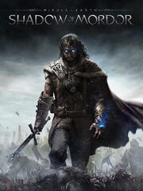

Middle-earth: Shadow of Mordor - Game of the Year Edition
Middle-earth: Shadow of Mordor - Game of the Year Edition
Detalles
|  | |
| Tiempo de juego | 1d 7h 1m 34s |
| Última actividad | 6/12/2020 1:24:31 |
| Añadido | 16/3/2022 22:02:30 |
| Modificado | 17/10/2022 23:21:56 |
| Estado de finalización | Completado |
| Librería | PlayStation |
| Fuente | PlayStation |
| Plataforma | Sony PlayStation 4 |
| Fecha de lanzamiento | 30/9/2014 |
| Puntuación de la Comunidad | 80 |
| Puntuación de la Crítica | 84 |
| Puntuación de usuario | |
| Género | Adventure Hack and slash/Beat 'em up Role-playing (RPG) |
| Desarrollador | Monolith Productions |
| Editor | WB Games |
| Característica | Single Player |
| Enlaces | Wikia Wikipedia Twitch Youtube Steam Official Website |
| Tag | |
Descripción
Middle-earth: Shadow of Mordor is a open world third-person action role-playing video game developed by Monolith Productions and published by Warner Bros. Interactive Entertainment, which takes place in the world of J.R.R. Tolkien's Legendarium.
The game takes place in the 60-year gap between the events of Tolkien's The Hobbit and The Lord of The Rings. It is a story of revenge, slaughter, and mystery set entirely in Mordor, the Land of Shadows. At its center is Talion, an ordinary man who loses everything, including his mortal life.
The game is set in a fully open world, and features various role-playing game elements such as experience points and skills. There are various ways the player can complete their main objective. Aside from the main storyline, there are various side quests and random events the player can complete within Mordor.
The melee system is inspired by that of the Batman Arkham series. Getting into a good fighting rhythm, using both regular attacks and counter-attacks will improve the player's combo multiplier.
A unique feature of Middle-earth: Shadow of Mordor is the Nemesis system. Every enemy in the game has their own name, rank, and memory. These enemies will continue to do their own jobs and tasks even when they're off screen. If the player does not kill an enemy in an encounter, this enemy will remember the player and change their tactics and conversations based on the encounter.
The game takes place in the 60-year gap between the events of Tolkien's The Hobbit and The Lord of The Rings. It is a story of revenge, slaughter, and mystery set entirely in Mordor, the Land of Shadows. At its center is Talion, an ordinary man who loses everything, including his mortal life.
The game is set in a fully open world, and features various role-playing game elements such as experience points and skills. There are various ways the player can complete their main objective. Aside from the main storyline, there are various side quests and random events the player can complete within Mordor.
The melee system is inspired by that of the Batman Arkham series. Getting into a good fighting rhythm, using both regular attacks and counter-attacks will improve the player's combo multiplier.
A unique feature of Middle-earth: Shadow of Mordor is the Nemesis system. Every enemy in the game has their own name, rank, and memory. These enemies will continue to do their own jobs and tasks even when they're off screen. If the player does not kill an enemy in an encounter, this enemy will remember the player and change their tactics and conversations based on the encounter.